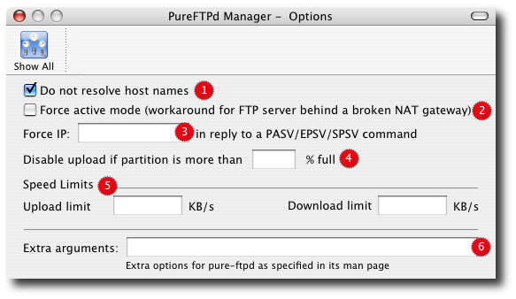

PureFTPd Manager - Options

2. Force ACTIVE mode. If your FTP server is behind a NAT box that doesn't support applicative FTP proxying, or if you use port redirection without a transparent FTP proxy, use this. Well... the previous sentence isn't very clear. Okay: if your network looks like this: (FTP server)-------(NAT/masquerading gateway/router)------(Internet)and if you want people coming from the internet to have access to your FTP server, please try without this option first. If Netscape clients can connect without any problem, your NAT gateway rulez. If Netscape doesn't display directory listings, your NAT gateway sucks. 3. Force the specified IP address in reply to a PASV/EPSV/SPSV command. If the server is behind a masquerading (NAT) box that doesn't properly handle stateful FTP masquerading, put the ip address of that box here. If you have a dynamic IP address, you can put the public host name of your gateway, that will be resolved every time a new client will connect. 4. Don't allow uploads if the partition is more than <percentage>% full. For instance, "95" will ensure your disks will never get filled more than 95% by FTP. No need for the "percent" sign after the number. 5. Enable bandwidth limitation. 6. Other arguments you want to pass to the server (see the Manual Pages) |